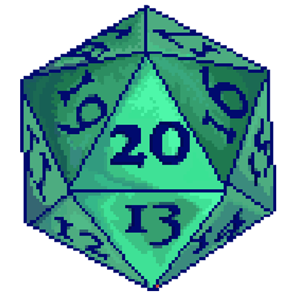
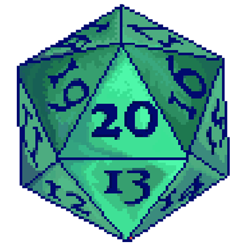

Enligt legenden föddes två familjer av drakar under världens allra första dagar.
Bahamut, den ädla
platinadraken, skapade the Metallic Dragons — guld, silver, brons, mässing och koppar.
Den
grymma,
femhövdade Tiamat skapade The Chromatic Dragons — röd, blå, grön, svart och vit.
De
metalliska och kromatiska drakarna är dödsfiender, bundna av en uråldrig hatfylld rivalitet, född ur den
eviga striden mellan Bahamut och Tiamat. Dragon's Rests ursprung är vävt ur denna uråldriga fiendskap.
För länge sedan härjade en
eldsprutande röd drake vid namn Sharruth längs Sword Coast. Tre mäktiga metalliska drakar förenade sina
krafter för att stoppa hennes framfart och fängslade henne djupt under havsbotten, övertygade om att
havets kalla djup skulle släcka hennes flammande raseri för alltid. Men enligt legenden var det just
Sharruths vilda vrede som satte igång de underjordiska vulkanerna och skapade Stormwreck Isle.
Med stor sannolikhet är Sharruth sedan länge död och begravd under ön, men the Chromatic Dragons viskar
att hon fortfarande lever och en dag kommer att återvända från sitt fängelse. En sak är säker: den
uråldriga drakens mäktiga magi har satt ett outplånligt avtryck på Stormwreck Isle
Genom århundradena har denna magi lockat drakar till ön och gjort den till en återkommande
krigszon i den eviga kampen mellan kromatiska och metalliska drakar. Många av dessa drakar har mött sitt
öde här, och varje fallen drake har lämnat efter sig ett andligt ärr som sprider oförutsägbara, magiska
krafter över ön.
För hundra år sedan försökte en blå drake att utnyttja denna destruktiva magi. En bronsdrake vid
namn Runara bad honom att överge sina planer. När han vägrade, dödade Runara honom och lade ytterligare
en drakes grav till ön.
Runara har tröttnat på stridens eviga ekon, och Stormwreck Isles sår är en ständig påminnelse om
konfliktens höga pris. I sin hängivenhet till fred och försoning grundade hon klostret Dragon's
Rest, en fristad från våldets mörker. I mänsklig skepnad lever Runara nu som ledare för en liten skara
kobloids.
Men den tidlösa konflikten mellan kromatiska och metalliska drakar hotar än idag att störa friden i
Dragon's Rest
 Maze of Choices
Maze of Choices Whispered directions
Whispered directions Test your fortune
Back to Entrance
Test your fortune
Back to Entrance Back to DM's Den
Back to DM's Den